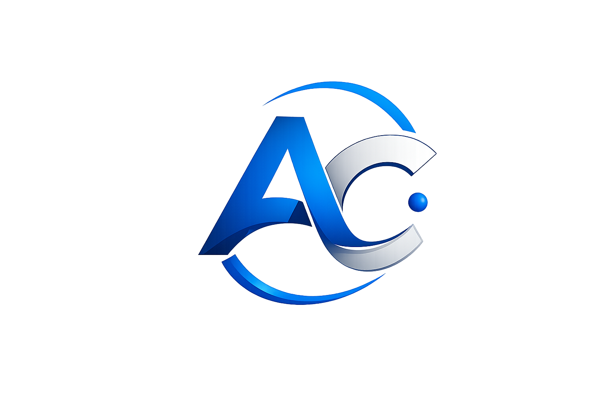
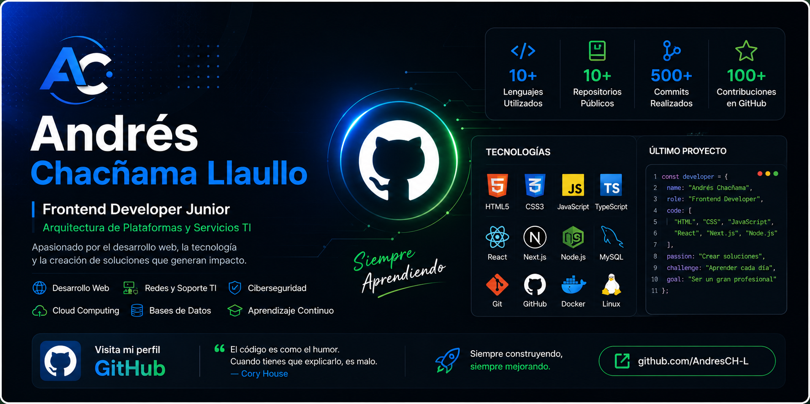
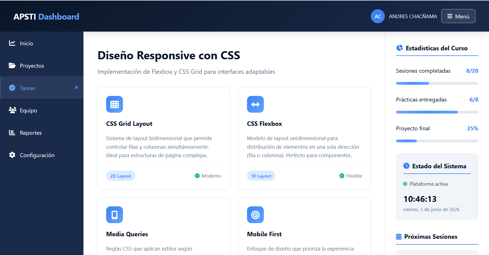
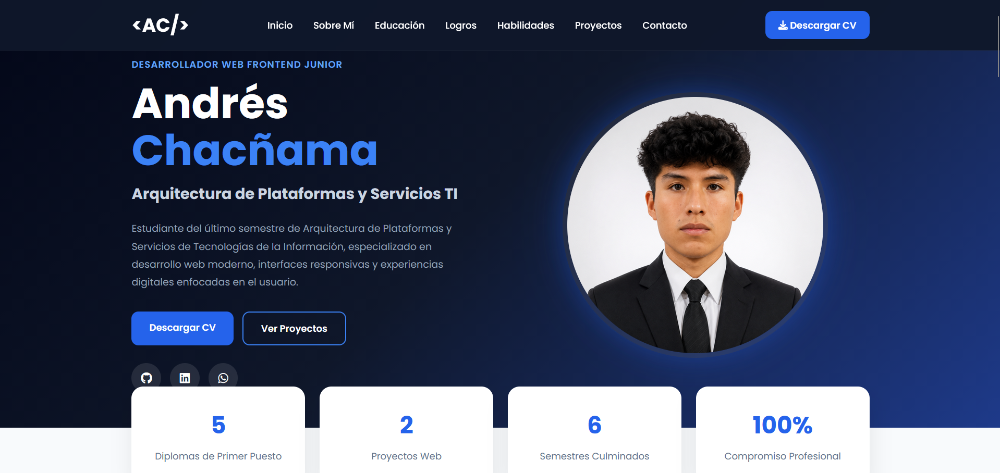
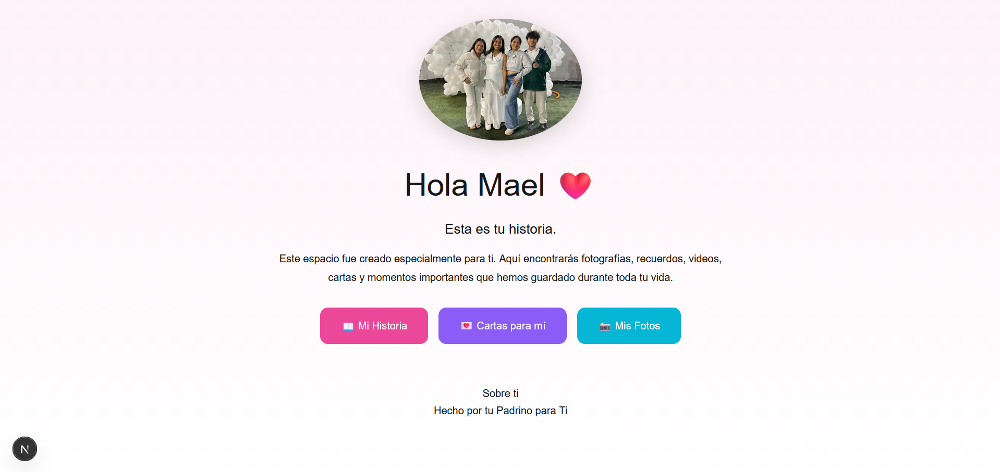

Estudiante del sexto y último semestre de Arquitectura de Plataformas y Servicios de Tecnologías de la Información. Apasionado por el desarrollo web, infraestructura tecnológica, redes, soporte TI, ciberseguridad y la creación de soluciones digitales modernas orientadas a la experiencia del usuario.
Diplomas de Primer Puesto
Proyectos Web
Semestres Culminados
Compromiso Profesional
Soy Andres Chacñama Llaullo, estudiante del sexto y último semestre de Arquitectura de Plataformas y Servicios de Tecnologías de la Información en el IEST Luis Felipe de las Casas Grieve.
Durante mi formación académica he desarrollado proyectos relacionados con desarrollo web, soporte técnico, infraestructura tecnológica, redes de computadoras, bases de datos y seguridad informática.
Me considero una persona disciplinada, autodidacta y comprometida con el aprendizaje continuo. Haber obtenido cinco primeros puestos consecutivos me ha permitido fortalecer mis habilidades de liderazgo, trabajo en equipo y resolución de problemas.
Mi objetivo es iniciar mi carrera profesional como Desarrollador Web Frontend Junior y continuar especializándome en tecnologías modernas, infraestructura TI y ciberseguridad.
Arquitectura de Plataformas y Servicios de Tecnologías de la Información
Sexto semestre - Último cicloDesarrollo de interfaces web modernas utilizando HTML, CSS, JavaScript y diseño responsivo.
Configuración de redes, soporte técnico y administración básica de servicios tecnológicos.
Aplicación de buenas prácticas de seguridad informática, protección de información y gestión de riesgos.
Diseño gráfico, edición multimedia, creación de contenido visual y producción digital.
Semestre I
Semestre II
Semestre III
Semestre IV
Semestre V
Rendimiento destacado durante la carrera
Alumno seleccionado para soporte institucional
Representante de estudiantes de los 4 programas de estudio
Introducción a Redes
Switching & Routing
Seguridad Informática
HTML, CSS y JavaScript
Bases de Datos
Multimedia y Edición
Fundamentos de Computación en la Nube
Introducción a Inteligencia Artificial
Nivel Avanzado
Nivel Avanzado
Nivel Intermedio
Nivel Intermedio
Nivel Avanzado
Nivel Avanzado
Nivel Avanzado
Nivel Avanzado
Nivel Avanzado
Nivel Avanzado
Nivel Intermedio
Nivel Intermedio


Dashboard interactivo desarrollado utilizando HTML, CSS y JavaScript con componentes modernos, estadísticas, formularios y diseño responsive.

Sitio web diseñado para mostrar habilidades técnicas, certificaciones, experiencia académica y proyectos tecnológicos.

Plataforma moderna para almacenar recuerdos, fotografías, videos, audios y cartas digitales mediante una experiencia intuitiva.
Proyecto en planificación orientado a la automatización de procesos, gestión documental, reportes y administración empresarial.
Estoy disponible para prácticas profesionales, proyectos freelance y oportunidades laborales relacionadas con desarrollo web, infraestructura TI, soporte técnico y tecnologías de la información.
Actualmente me encuentro disponible para prácticas profesionales, oportunidades laborales y proyectos tecnológicos.
andresxd.2018@gmail.com
+51 930136375
Marcona - Ica - Perú
Andres Chacñama Llaullo